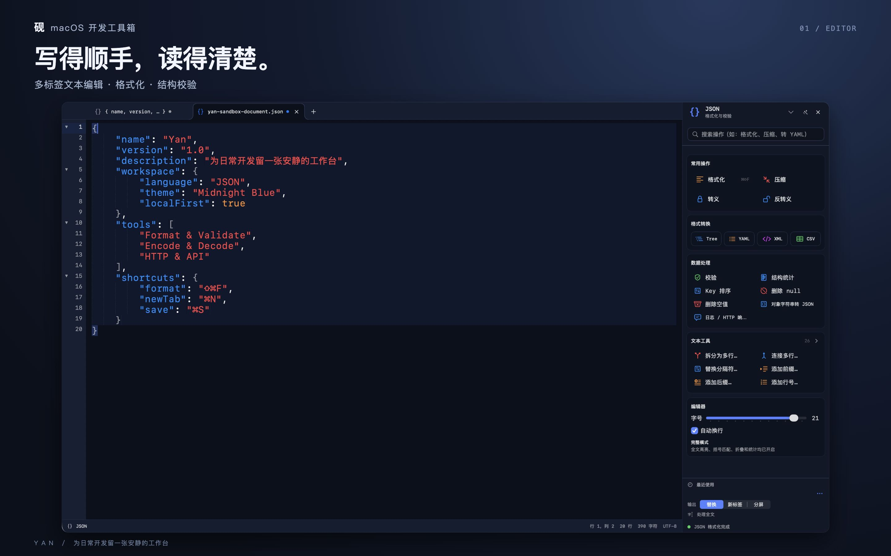
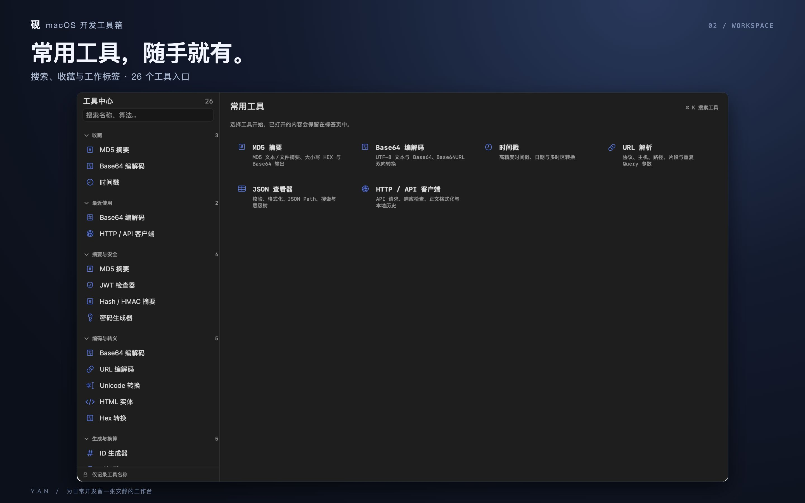
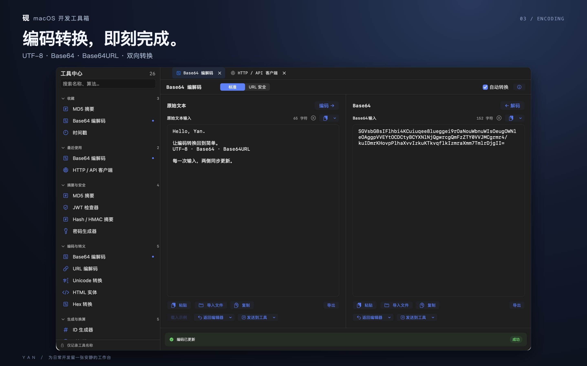
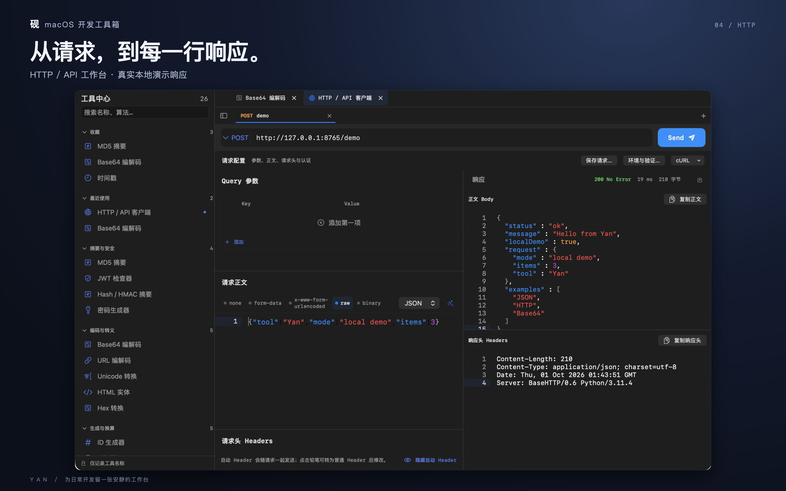

01 / EDIT
From text to structure
Multiple tabs, syntax highlighting, find and replace, and JSON, XML and Markdown processing.
Yan.app brings text editing, formatting, data validation and everyday developer tools into one native Mac workspace.
macOS 13 or later · No account required
Multiple tabs, syntax highlighting, find and replace, and JSON, XML and Markdown processing.
Encoding, hashes, timestamps, regular expressions, QR codes, text differences and structured-data tools.
HTTP requests, environments, response inspection and local history. You choose the destination.
Text editing and conversion run on your Mac. HTTP requests, public-IP checks and optional font downloads use the network. No ads, analytics SDK or developer-operated content upload service.
Read the full privacy policy →A real Mac recording, from launching the app to editing text, using tools and exploring settings.
Screenshots show the Chinese interface; the app also supports English.




砚把文本编辑、格式化、数据校验与常用开发工具放在一个原生 Mac 工作台里。
支持 macOS 13 及以上 · 无需注册账号
多标签编辑、语法高亮、查找替换和 JSON、XML、Markdown 等格式处理。
编码转换、Hash、时间戳、正则、二维码、差异比较与结构化数据工具。
HTTP 请求、环境变量、响应查看和本地请求历史；发送目标由你选择。
文本编辑与转换在本机处理。HTTP 请求、主动查询公网 IP 和下载字体需要网络。没有广告、行为分析 SDK 或开发者内容上传服务。
查看完整隐私政策 →从桌面启动砚，演示文本编辑、工具与设置。录像来自真实 Mac。